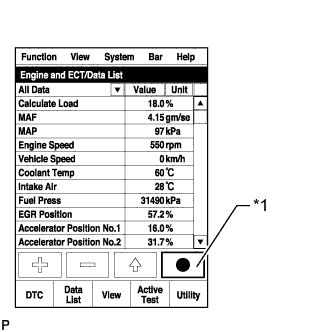
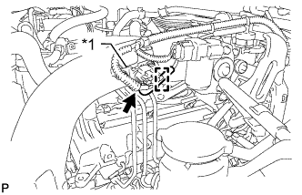
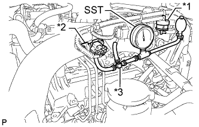

СИСТЕМА ВПУСКА (для моделей без DPF) > ПРОВЕРКА БЕЗ СНЯТИЯ С АВТОМОБИЛЯ |
| 1. ПРОВЕРЬТЕ СИСТЕМУ ВПУСКА ВОЗДУХА |
Убедитесь, что в местах, показанных на рисунке, нет всасывания воздуха и утечек.
| *A | для моделей без системы РОГ | - | - |
| *A | для моделей с системой РОГ без охладителя РОГ | - | - |
| *A | для моделей с системой РОГ с охладителем РОГ | - | - |
| *A | для моделей с системой РОГ с охладителем РОГ | *B | для моделей с системой РОГ без охладителя РОГ |
| *C | для моделей без системы РОГ | - | - |
| *1 | Электровакуумный клапан (для отсечки РОГ) | *2 | Электровакуумный клапан (для перепускного клапана РОГ) |
| *3 | Электровакуумный клапан (для опоры двигателя) | *4 | Метка, нанесенная синей краской |
| *5 | Метка, нанесенная белой краской | *6 | Метка, нанесенная розовой краской |
| *7 | Метка, нанесенная желтой краской | - | - |
| *a | К вакуумной трубке № 2 | *b | К левой передней подушке опоры двигателя |
| *c | К клапану управления разрежением | *d | К перепускному клапану РОГ |
| 2. ПРОВЕРЬТЕ ВОЗДУХОЗАБОРНУЮ СИСТЕМУ |
Убедитесь в отсутствии подсоса воздуха и засорений между корпусом воздушного фильтра и впускным отверстием турбонагнетателя, а также между выпускным отверстием турбонагнетателя и головкой блока цилиндров.
| Состояние | Управление |
| Засорение воздушного фильтра | Очистите или замените фильтрующий элемент |
| Разрыв или деформация шлангов | Отремонтируйте или замените |
| Подсос воздуха в соединениях | Проверьте все соединения и отремонтируйте |
| Растрескивание узлов и деталей | Проверьте и выполните ремонт или замену |
| 3. ПРОВЕРЬТЕ СИСТЕМУ ВЫПУСКА |
Убедитесь в отсутствии утечек и засорений между головкой блока цилиндров и впускным отверстием турбонагнетателя, а также между выпускным отверстием турбонагнетателя и выпускной трубой.
| Условие | Управление |
| Деформированные узлы | Отремонтируйте или замените |
| Наличие посторонних материалов в каналах | Снимите |
| Утечки из узлов и деталей | Отремонтируйте или замените |
| Растрескивание узлов и деталей | Проверьте и выполните ремонт или замену |
| 4. ПРОВЕРЬТЕ ДАВЛЕНИЕ НАДДУВА |
Подсоедините портативный диагностический прибор к DLC3.
Запустите двигатель и включите портативный диагностический прибор.
Прогрейте двигатель.
Войдите в следующие меню: Powertrain / Engine and ECT / Data List / All Data.
|  |
С помощью портативного диагностического прибора зарегистрируйте значения параметров Data List, показанных на рисунке.
| *1 | Кнопка фиксации мгновенных значений параметров |
Сравните MAP и Target Booster Pressure.
Прогрейте двигатель.
|  |
Освободите зажим и отсоедините вакуумный шланг от датчика абсолютного давления в коллекторе.
| *1 | Датчик давления наддува |
|  |
С помощью тройника подсоедините SST (манометр для измерения давления наддува) между датчиком абсолютного давления в коллекторе и газовым фильтром.
| *1 | Газовый фильтр |
| *2 | Датчик абсолютного давления в коллекторе |
| *3 | Тройник |
Для моделей с механической трансмиссией:
Нажав на педаль сцепления, полностью нажмите на педаль акселератора. Измерьте давление наддува при максимальной частоте вращения коленчатого вала двигателя (4450-4750 об/мин).
Для моделей с автоматической трансмиссией:
Переведите рычаг переключения передач в положение P или N, а затем до упора нажмите педаль акселератора. Измерьте давление наддува при максимальной частоте вращения коленчатого вала двигателя (4450-4750 об/мин).
Таблица с описанием предположительно неисправных участков, когда давление ниже номинального.
| Параметр / Устройство | MAP (абсолютное давление во впускном коллекторе) | MAF (расход воздуха на впуске) | Accel Position | Actual Throttle Position | Actual EGR Valve Position | EGR Close Lrn. Status (состояние параметра настройки полностью закрытого положения клапана РОГ) | Fuel Pressure | Injection Feedback Val #1 – #4 |
| Значения, полученные на реальном исправном автомобиле *1 | - | 150 г/с | 100% | 0% | 0% | OK | - | -3 - +3 мм3/ход |
| Значения, соответствующие неисправности *1 | MAP ниже Target Booster Pressure на 25 кПа или более | MAF менее 90 г/с | Accel Position менее 90% | Actual Throttle Position отличается от Target Throttle Position более чем на 5% | Actual EGR Valve Position отличается от Target EGR Valve Position более чем на 5% | NG (определяется после настройки) | Fuel Pressure ниже Target Common Rail Pressure на 10 МПа или более (проверяйте в стационаром режиме) | За пределами диапазона, указанного выше |
| Турбонагнетатель | ○ | ○ | - | - | - | - | - | - |
| Клапан РОГ не закрывается, либо перемещается неправильно | ○ | ○ | - | - | ○ (неисправность, связанная с перемещением клапана РОГ) *2 | ○ (клапан РОГ не закрывается) *2 | - | - |
| Неисправность, связанная с перемещением дроссельной заслонки дизельного двигателя | ○ (расход воздуха на впуске снижается) | ○ | - | ○ | - | - | - | - |
| Педаль акселератора невозможно нажать полностью, или неисправен датчик положения педали акселератора | - | ○ | ○ | - | - | - | - | - |
| Подсос или засорение в системе впуска воздуха | ○ | ○ | - | - | - | - | - | - |
| Утечка отработавших газов перед турбонагнетателем или засорение | ○ | ○ | - | - | - | - | - | - |
| Датчик абсолютного давления в коллекторе | ○ | ○ | - | - | - | - | - | - |
| Отсоединен шланг датчика абсолютного давления в коллекторе | ○ | ○ | - | - | - | - | - | - |
| Датчик массового расхода воздуха в сборе | - | ○ | - | - | - | - | - | - |
| Топливная система (форсунка, нагнетающий насос или топливная система Common Rail) | ○ | ○ | - | - | - | - | ○ (утечка из топливной форсунки, снижение давления срабатывания клапана сброса давления, или клапан заедает) | ○ *3 |
| 5. ПРОВЕРЬТЕ ЭЛЕКТРОДВИГАТЕЛЬ ДЛЯ УПРАВЛЕНИЯ ТУРБОНАГНЕТАТЕЛЕМ |
Снимите теплозащитный экран турбины № 1 и теплозащитный экран выпускного коллектора № 1 (Нажмите здесь).
Проверьте ход.
Переведите замок зажигания из положения ON (ВКЛ) в положение OFF (ВЫКЛ).
Проверьте работу электродвигателя постоянного тока. Убедитесь, что ход штока электродвигателя соответствует положениям A - D на следующем рисунке.
После того, как электродвигатель постоянного тока сработает, убедитесь визуально, что тяга привода лопаток соприкасается со стопором полного закрывания.
| *1 | Ход штока электродвигателя (мм (дюймы)) | *2 | Замок зажигания |
| *3 | Время выключения зажигания (с) | *4 | Шток электродвигателя |
| *5 | Контргайка | *6 | Стопор полного закрывания |
| *a | Контакт стопора полного закрывания | - | - |